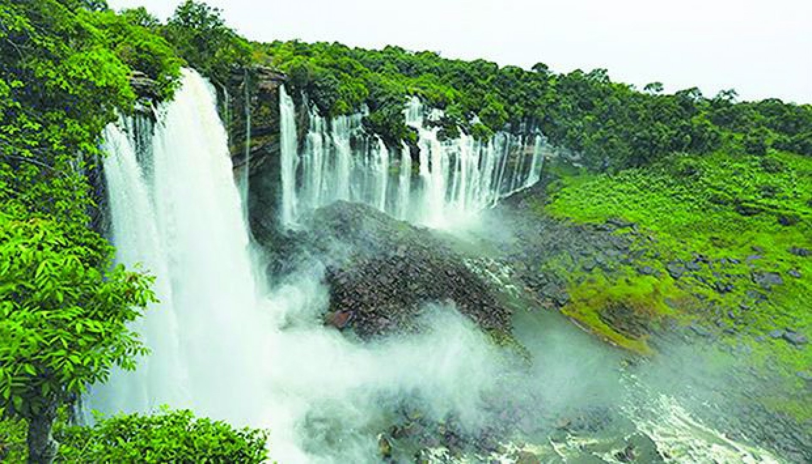
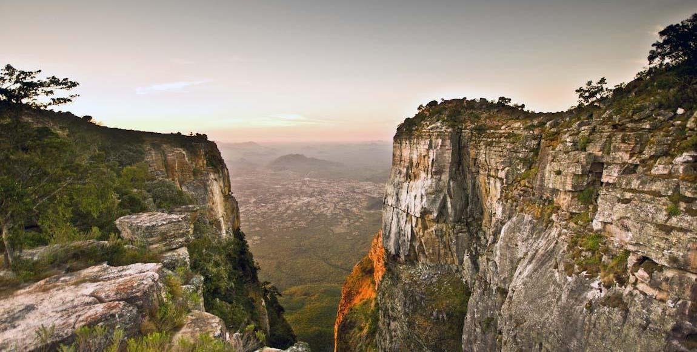

Destinos Populares

Ilha do Mussulo-Luanda
Península com praias de areia branca e águas calmas.
O que fazer: Passeios de barco, banho de mar, esportes aquáticos,
restaurantes de frutos do mar

Quedas de Kalandula
Uma das maiores e mais espetaculares quedas de água de África, com
105 m de altura e 400 m de largura sobre o rio Lucala
O que
fazer: Passeios guiados, nadar em áreas seguras, piqueniques,
fotografia

Fenda da Tundavala — Huíla (Lubango)
Desfiladeiro com mais de 2.200 m de altitude e com vistas
panorâmicas impressionantes sobre o planalto central
O que
fazer: Caminhadas, trekking, fotografia de paisagens, observação
de flora e fauna.